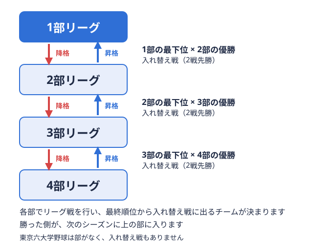
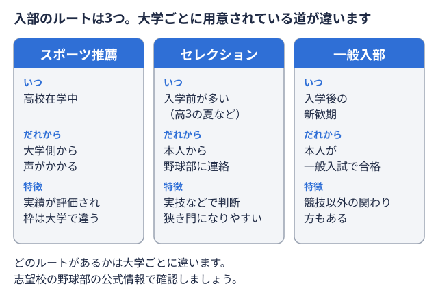
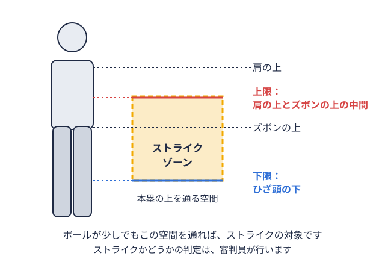
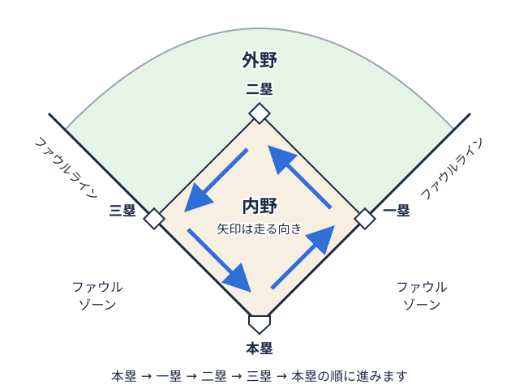

野球用語辞典
試合観戦や部活動で使われる野球用語51語を分野別にまとめました。
用語
| 勝ち点 | 同じ相手との試合を続けて行い、先に2勝したチームに与えられる点。勝った試合数ではなく、この点の多さで順位を決める。 |
|---|---|
| 対戦カード | 同じ2チームが、勝ち点をかけて続けて行う試合のまとまり。東京六大学では、どちらかが2勝するまで同じ相手と戦う。 |
| 総当たり | リーグの全チームが、ほかのすべてのチームと対戦する方式。東京六大学では6校がそれぞれ他の5校と戦う。 |
| 勝率 | 勝った試合数を、勝った試合と負けた試合の合計で割った値。引き分けの試合は数えない。 |
| 優勝決定戦 | リーグ戦で1位のチームが勝ち点も勝率も並んだときに、優勝を決めるために行う1試合。 |
| 部制 | 加盟校を実力に応じて1部から4部までのグループに分け、グループごとにリーグ戦を行う仕組み。東都大学野球連盟が採用している。  |
| 入れ替え戦 | 上の部で最下位になったチームと、すぐ下の部で優勝したチームが戦う試合。勝った側が次のシーズンに上の部へ入る。 |
| 昇格 | 所属する部（リーグ）が変わること。下の部から上の部へ上がるのが昇格、上の部から下の部へ下がるのが降格。 |
| ベンチ入り | 試合の日にベンチに入り、いつでも出られる状態でチームに加わること。東京六大学では選手25名がベンチ入りできる。 |
| タイブレーク | 延長戦で早く決着をつけるため、走者を塁に置いた状態から攻撃を始める方式。実施するかどうかや形は大会ごとに違う。 |
| 主務 | マネージャーの代表にあたる部員。連盟や大学との連絡窓口になり、リーグ戦の運営や合宿の準備なども受け持つ。 |
| マネージャー | 選手ではなく、練習や試合の運営、用具や書類の管理などで部を支える部員。仕事の範囲は大学ごとに違う。 |
| 学生コーチ | 選手としてではなく、練習メニューの立案、ノック、投球の指導などで選手を支える学生スタッフ。呼び方は大学で違う。 |
| アナリスト | 練習や試合の映像、計測したデータを分析し、選手の起用や試合中の作戦づくりに役立てる学生スタッフ。 |
| 学生トレーナー | 選手の体調やトレーニングの管理、ケガの予防やケアを受け持つ学生スタッフ。選手が万全の状態で試合に出られるよう支える。 |
| スコアラー | 試合の経過や選手の成績をスコアブックに書き残す担当者。その記録が、打率などの成績のもとになる。 |
| スコアブック | 試合の経過と選手の成績を、決まった記号を使って書き残す記録用紙。打率などを計算するもとのデータになる。 |
| セレクション | 入部を希望する人の練習参加や実技を見て、入部や推薦の可否を判断する選考。実施するか、どう行うかは大学ごとに違う。  |
| スポーツ推薦 | 高校時代の競技の実績などをもとに、大学が選考して入学を認める方式。名称や条件は大学ごとに違うので、入試要項で確認する。 |
| 練習参加 | 入部や進学を考える人が、大学野球部の練習に実際に加わって体験すること。入部の前に必ず参加するよう求める大学もある。 |
| 特待生 | 入学や在籍に必要な費用の一部または全部が免除される部員。制度の有無や条件は学校ごとに決まっている。 |
| 準硬式 | 大学を中心に行われる野球で、ゴムで覆った専用のH号球を使う。硬いボールの野球と軟らかいボールの野球の中間的な競技とされる。 |
| 学生野球憲章 | 大学や高校などの学生野球が守る基本ルールを定めた規則。特待生や、プロ野球団との関わり方にも決まりがある。 |
| プロ志望届 | 大学生がプロ野球団と交渉したり入団テストを受けたりする前に、所属する大学野球連盟へ出す届け出。提出者は連盟のサイトで公表される。 |
| ドラフト会議 | プロ野球の球団が、入団してほしい新人選手を指名する会議。日本野球機構が主催し、毎年開かれる。 |
| NPB | 日本野球機構の略称。プロ野球を運営する団体で、ドラフト会議の主催もしている。 |
| 社会人野球 | 企業やクラブチームなどが持つチームによる野球。日本野球連盟が、都市対抗野球大会などを主催している。 |
| 指名打者 | 投手の代わりに打撃だけを行う選手で、守備には就かない。試合前に名前と打順を申告する。東京六大学は2026年から採用。 |
| 遊撃手 | 二塁と三塁の間あたりを守る選手。スコアブックでは、守備位置を表す番号「6」で書く。 |
| ストライクゾーン | 本塁の上の空間で、打者の肩の上とズボンの上の中間から、ひざ頭の下までの範囲。ここを通った投球が、ストライクの対象になる。  |
| 四球 | ストライクゾーンを外れた投球が4つになり、打者が一塁へ進めること。打数には数えない。 |
| 死球 | 投手の投球が打者に当たり、打者が一塁へ進むこと。打数には数えない。 |
| 故意四球 | 守備側が打者との勝負を避けるために、わざと与える四球。ふつうの四球とは分けて記録される。 |
| バント | バットを振らず、構えたまま球に軽く当てて、転がす打ち方。走者を進めたいときなどに使う。 |
| 犠打 | 打者が自分はアウトになってもよいと考え、バントで塁にいる選手を次の塁へ進める打撃。成績上は打数に数えない。  |
| 犠飛 | アウトが2つ未満のとき、打ち上げた飛球が捕られても、その間に塁にいた選手が得点できた打撃。打数に数えない。 |
| 盗塁 | 塁にいる選手が、安打や守備のミスなどによらず、投球の間に次の塁へ進むこと。成功すると盗塁が記録される。 |
| 併殺 | 1つのプレーで、守備側が2つのアウトを取ること。ゴロを処理して続けて2人をアウトにする場面が代表的。 |
| 残塁 | 塁に出た選手が、得点もアウトもならずに塁に残ったまま、その回の攻撃が終わること。また、その人数。 |
| 失策 | 守備側の選手のミス（球を取り損なう、悪い送球をするなど）で、打者や走者が余分に進めたときに記録される。 |
| 暴投 | 投手の投球が高すぎる、低すぎる、横にそれるなどで、受ける捕手が止められず、塁にいる選手が進んだときの記録。 |
| 捕逸 | 普通に受けられるはずの投球を捕手が受け損ない、塁にいる選手が進んだときに、捕手に付く記録。 |
| 先発投手 | その試合の最初からマウンドに上がって投げる投手。あとから交代して投げる投手は、救援投手と呼ぶ。 |
| 救援投手 | 先発投手のあとを受けて、試合の途中から投げる投手。リリーフとも呼ばれる。 |
| 継投 | 先発投手から救援投手へ、投手を交代させながら試合を進めること。 |
| セーブ | 勝っているチームの最後を投げ切った救援投手に、一定の条件を満たすと与えられる記録。 |
| 防御率 | 投手が1試合（9回）を投げたら何点に抑えられるかを示す数字。自責点×9÷投球回で求め、小さいほど良い。 |
| 自責点 | 投手に責任がある失点のこと。守備のミスなどが原因の失点は含まない。 |
| 投球回 | 投手が投げた回（イニング）の数。アウト1つを3分の1回として数える。 |
| 打率 | 打者が安打を打った割合。安打の数を打数で割って求める。四球や犠打の打席は打数に入れない。 |
| 出塁率 | 打者が安打・四球・死球で塁に出た割合を示す数字。打率では分からない、四球で出塁する力も含めて測れる。 |